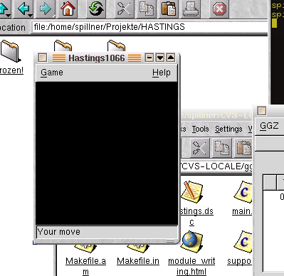
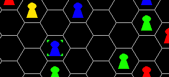
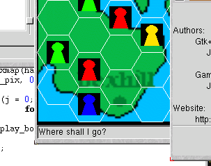
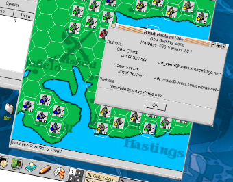

Writing modules for the GNU Gaming Zone (GGZ)
I. Preface
This document is not a theory about writing game modules but deals specifically on my work on Hastings1066. Is shows the process of
creating such a game using existing resources and extending them.
II. Ready to start
As I'm not too familiar with Gtk+ (in fact, I can't even spell the letters), my choice was to take the TicTacToe (ttt) module as the basis.
It does not only provide a similar user interface (clicking on certain fields leads to changes on them), but is also very compact and
has already much core functionaliy such as the statusbar. I copied both the ttt client and server module to a new directory called hastings/,
and removed all binaries and object files. Then I edited the Makefiles to fit the new name, and changed the game and room description.
Despite this is not the most professional way, surely it is the simplest and safest.
After that minimum effort, I froze both directories into frozen-1 and compiled. It went smoothly, and I could play TicTacToe named Hastings.
(For the curious, the frozen packages are available at mindx.sourceforge.net)
III. Cutting it down
To have a useful template, I commented all ttt-specific commands out. So I was able to replace them with my appropriate lines.
The most important changes were the graphics of the board, the number of players (which is now 8 at the maximum), and the communication
with the server part of Hastings, which needed not only the information where to set a unit but also where it comes from.
Because the O and X pixmaps weren't needed any more, I removed them too.
Eventually I had a template module with no functionality and lots of plans. Have a look at it, using the K Desktop Environment 2.0:

IV. Hexagons
Now it was time to add the fields. I invented an algorithm to draw hexfields, and resized the board to approximately 500x500.
Then I started the gimp and created 8 pixmaps: four units with different colors, and four small ones indicating the selected unit
in the well-known C&C style, using a green frame. Also, I took the (yet unimplemented) About-dialog from another GGZ module,
and integrated it into Hastings. This is how it looked then:

V. User interface and event handling
As Hastings crashed when clicking on the board, the event system and the resolution of colons and rows had to be changed. The latter
one was only a matter of some maths, but the communication with the server wasn't that easy. One reason was that I needed two events for
moves (from and to), or I solved this by storing the selected unit locally and then send both values to the server. Team-based gameplay
belongs also into this step. A team consists of 1 to 7 players, so there was need for another variable. The assignment of players to
teams would be too difficult for now, so it's done automatically. The AI players need to response, but as I have no idea yet what to let
them do, I call them defensive AI, only standing around and hit back when attacked.
Besides, additional code was needed to let the game know how many players participate (it's not a fixed value here).
VI. Extensions

We have come quite far, have we? But to make a good game we need to add more functionality. Look at the picture: The pixmaps need to
be transparent, and hexagons on the water are completely useless. There is a need for showing who belongs to whom, e.g. by team flags,
and a statistics bar (right between the board and the statusbar) would be nice too, showing overall win and loss. The AI needs some rules
to be able to move towards the enemies. And shouldn't it be able to quit a team if someone doesn't play nice? What about obstacles on
the land, e.g. trees? This is all stuff for real programmers, so let's start with it right now :-)
VII. Too lazy (temporary paragraph)
Think I'm too lazy in the moment, so let's wait what next weekend will bring me.
Until then have a look at the screenshots and at the sources. Not everything works, but it is intended to do so until the next game session.
Hope it will bring some more fun into the Open Source gaming community.
